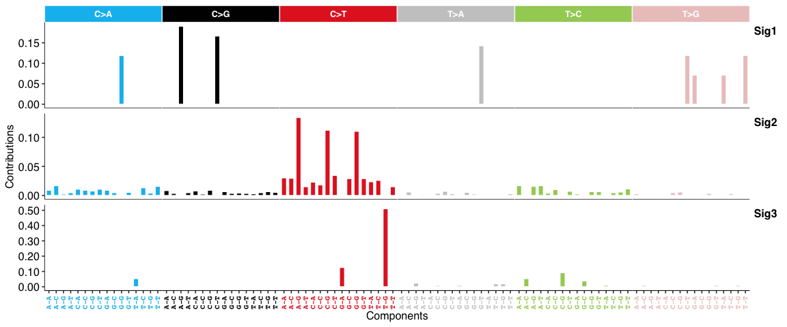
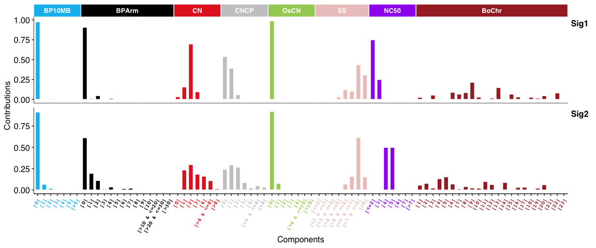
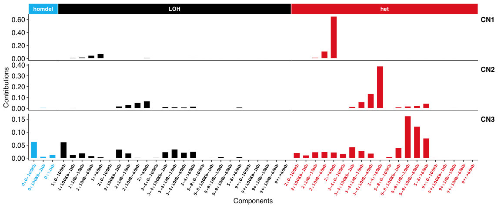
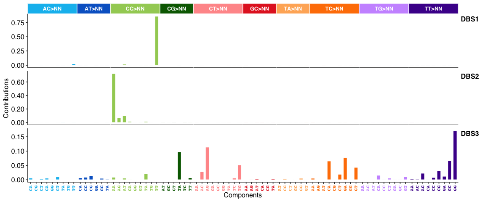
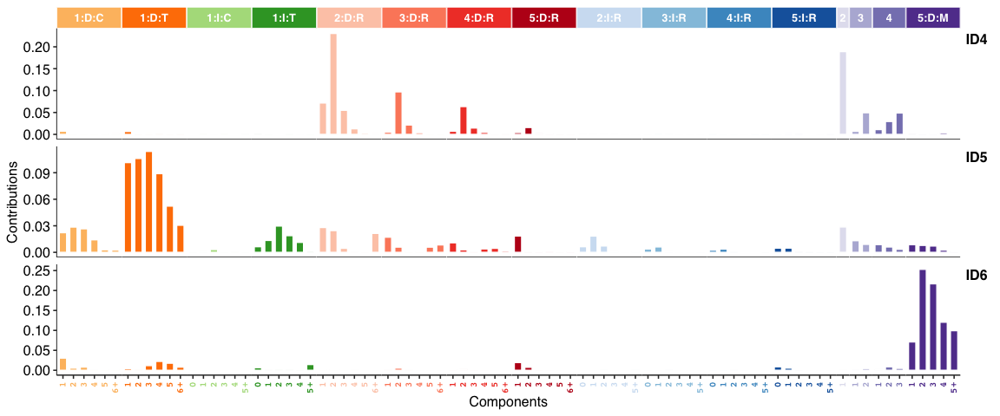
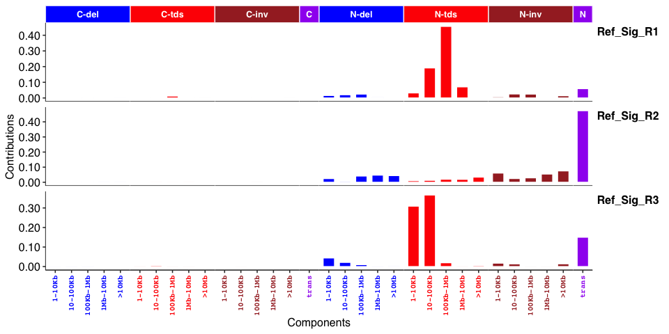

📊 Overview
The cancer genome is shaped by various mutational processes over its lifetime, stemming from exogenous and cell-intrinsic DNA damage, and error-prone DNA replication, leaving behind characteristic mutational spectra, termed mutational signatures. This package, sigminer, helps users to extract, analyze and visualize signatures from genome alteration records, thus providing new insight into cancer study.
For pipeline tool, please see its co-evolutionary CLI sigflow.
SBS signatures:

Copy number signatures:


DBS signatures:

INDEL (i.e. ID) signatures:

Genome rearrangement signatures:

✈️ Features
- supports a standard de novo pipeline for identification of 5 types of signatures: copy number, SBS, DBS, INDEL and RS (genome rearrangement signature).
- supports quantify exposure for one sample based on known signatures.
- supports association and group analysis and visualization for signatures.
- supports two types of signature exposures: relative exposure (relative contribution of signatures in each sample) and absolute exposure (estimated variation records of signatures in each sample).
- supports basic summary and visualization for profile of mutation (powered by maftools) and copy number.
- supports parallel computation by R packages foreach, future and NMF.
- efficient code powered by R packages data.table and tidyverse.
- elegant plots powered by R packages ggplot2, ggpubr, cowplot and patchwork.
- well tested by R package testthat and documented by R package roxygen2, roxytest, pkgdown, and etc. for both reliable and reproducible research.
⏬ Installation
You can install the stable release of sigminer from CRAN with:
install.packages("BiocManager")
BiocManager::install("sigminer", dependencies = TRUE)You can install the development version of sigminer from Github with:
remotes::install_github("ShixiangWang/sigminer", dependencies = TRUE)
# For Chinese users, run
remotes::install_git("https://gitee.com/ShixiangWang/sigminer", dependencies = TRUE)You can also install sigminer from conda bioconda channel with
🔰 Usage
A complete documentation of sigminer can be read online at https://shixiangwang.github.io/sigminer-book/. All functions are well organized and documented at https://shixiangwang.github.io/sigminer/reference/index.html. For usage of a specific function fun, run ?fun in your R console to see its documentation.
❓ QA
How to install the copynumber package
For some extra features provided by sigminer, copynumber package is required. Due to the removal of the copynumber package from Bioc, I had to remove it from the dependencies in v2.2.0. You can install the package from https://github.com/shixiangwang/copynumber/. It is generally recommended as I have added some features, although other forks of this package exist on GitHub.
remotes::install_github("ShixiangWang/copynumber")📎 Citation
If you use sigminer in academic field, please cite one of the following papers.
- Wang S, Li H, Song M, Tao Z, Wu T, He Z, et al. (2021) Copy number signature analysis tool and its application in prostate cancer reveals distinct mutational processes and clinical outcomes. PLoS Genet 17(5): e1009557. https://doi.org/10.1371/journal.pgen.1009557
- Wang, S., Tao, Z., Wu, T., & Liu, X. S. (2021). Sigflow: an automated and comprehensive pipeline for cancer genome mutational signature analysis. Bioinformatics, 37(11), 1590-1592. https://doi.org/10.1093/bioinformatics/btaa895
- Ziyu Tao, Shixiang Wang, Chenxu Wu, Tao Wu, Xiangyu Zhao, Wei Ning, Guangshuai Wang, Jinyu Wang, Jing Chen, Kaixuan Diao, Fuxiang Chen, Xue-Song Liu, The repertoire of copy number alteration signatures in human cancer, Briefings in Bioinformatics, 2023, bbad053. https://doi.org/10.1093/bib/bbad053
📃 References
Please properly cite the following references when you are using any corresponding features. The references are also listed in the function documentation. Very thanks to the works, sigminer cannot be created without the giants.
- Mayakonda, Anand, et al. “Maftools: efficient and comprehensive analysis of somatic variants in cancer.” Genome research 28.11 (2018): 1747-1756.
- Gaujoux, Renaud, and Cathal Seoighe. “A Flexible R Package for Nonnegative Matrix Factorization.”” BMC Bioinformatics 11, no. 1 (December 2010).
- H. Wickham. ggplot2: Elegant Graphics for Data Analysis. Springer-Verlag New York, 2016.
- Kim, Jaegil, et al. “Somatic ERCC2 mutations are associated with a distinct genomic signature in urothelial tumors.” Nature genetics 48.6 (2016): 600.
- Alexandrov, Ludmil B., et al. “Deciphering signatures of mutational processes operative in human cancer.” Cell reports 3.1 (2013): 246-259.
- Degasperi, Andrea, et al. “A practical framework and online tool for mutational signature analyses show intertissue variation and driver dependencies.” Nature cancer 1.2 (2020): 249-263.
- Alexandrov, Ludmil B., et al. “The repertoire of mutational signatures in human cancer.” Nature 578.7793 (2020): 94-101.
- Macintyre, Geoff, et al. “Copy number signatures and mutational processes in ovarian carcinoma.” Nature genetics 50.9 (2018): 1262.
- Tan, Vincent YF, and Cédric Févotte. “Automatic relevance determination in nonnegative matrix factorization with the/spl beta/-divergence.” IEEE Transactions on Pattern Analysis and Machine Intelligence 35.7 (2012): 1592-1605.
- Bergstrom EN, Huang MN, Mahto U, Barnes M, Stratton MR, Rozen SG, Alexandrov LB: SigProfilerMatrixGenerator: a tool for visualizing and exploring patterns of small mutational events. BMC Genomics 2019, 20:685 https://bmcgenomics.biomedcentral.com/articles/10.1186/s12864-019-6041-2
📄 LICENSE
The software is made available for non commercial research purposes only under the MIT. However, notwithstanding any provision of the MIT License, the software currently may not be used for commercial purposes without explicit written permission after contacting patents’ authors.
Related patents:
-
CN202011516653.7
https://kms.shanghaitech.edu.cn/handle/2MSLDSTB/127042
MIT © 2019-Present Shixiang Wang, Xue-Song Liu
MIT © 2018 Anand Mayakonda
Sigminer v1-v2 are supported by Cancer Biology Group @ShanghaiTech